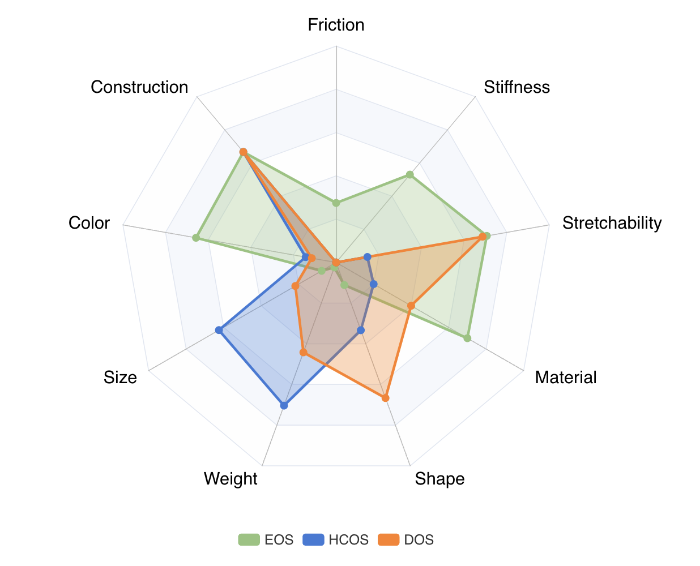

|  |
Garcia-Camacho Irene, Longhini Alberta, Welle Michael C, Alenyà Guillem, Kragic Danica, Borràs Júlia
International Conference on Robotics and Automation (ICRA), 2024
[PDF] [Bibtex] [Abstract] @article{garcia2024standardization, title={Standardization of Cloth Objects and its Relevance in Robotic Manipulation}, author={Garcia-Camacho, Irene and Longhini, Alberta and Welle, Michael and Aleny{\`a}, Guillem and Kragic, Danica and Borr{\`a}s, J{\'u}lia}, journal={arXiv preprint arXiv:2403.04608}, year={2024} }
The field of robotics faces inherent challenges in manipulating deformable objects, particularly in understanding and standardising fabric properties like elasticity, stiffness, and friction. While the significance of these properties is evident in the realm of cloth manipulation, accurately categorising and comprehending them in real-world applications remains elusive. This study sets out to address two primary objectives: (1) to provide a framework suitable for robotics applications to characterise cloth objects,, and (2) to study how these properties influence robotic manipulation tasks. Our preliminary results validate the framework's ability to characterise cloth properties and compare cloth sets, and reveal the influence that different properties have on the outcome of five manipulation primitives. We believe that, in general, results on the manipulation of clothes should be reported along with a better description of the garments used in the evaluation. This paper proposes a set of these measures.
|
| |
Alberta Longhini, Marco Moletta, Alfredo Reichlin, Michael C Welle, David Held, Zackory Erickson, Danica Kragic
International Conference on Robotics and Automation (ICRA), 2023
[PDF] [Bibtex] [Abstract] @article{longhini2022edo, title={EDO-Net: Learning Elastic Properties of Deformable Objects from Graph Dynamics}, author={Longhini*, Alberta and Moletta*, Marco and Reichlin, Alfredo and Welle, Michael C and Held, David and Erickson, Zackory and Kragic, Danica}, journal={arXiv preprint arXiv:2209.08996}, year={2022} }
We study the problem of learning graph dynamics of deformable objects which generalize to unknown physical properties. In particular, we leverage a latent representation of elastic physical properties of cloth-like deformable objects which we explore through a pulling interaction. We propose EDO-Net (Elastic Deformable Object - Net), a model trained in a self-supervised fashion on a large variety of samples with different elastic properties. EDO-Net jointly learns an adaptation module, responsible for extracting a latent representation of the physical properties of the object, and a forwarddynamics module, which leverages the latent representation to predict future states of cloth-like objects, represented as graphs. We evaluate EDO-Net both in simulation and real world, assessing its capabilities of: 1) generalizing to unknown physical properties of cloth-like deformable objects, 2) transferring the learned representation to new downstream tasks.
|
| |
Alberta Longhini, Marco Moletta, Alfredo Reichlin, Michael C Welle, Alexander Kravberg, Yufei Wang, David Held, Zackory Erickson, Danica Kragic
International Conference on Robotics and Automation (ICRA), 2023
[PDF] [Bibtex] [Abstract] @article{longhini2022elastic, title={Elastic Context: Encoding Elasticity for Data-driven Models of Textiles}, author={Longhini, Alberta and Moletta, Marco and Reichlin, Alfredo and Welle, Michael C and Kravberg, Alexander and Wang, Yufei and Held, David and Erickson, Zackory and Kragic, Danica}, journal={arXiv preprint arXiv:2209.05428}, year={2022} }
Physical interaction with textiles, such as assistive dressing, relies on advanced dextreous capabilities. The underlying complexity in textile behavior when being pulled and stretched, is due to both the yarn material properties and the textile construction technique. Today, there are no commonly adopted and annotated datasets on which the various interaction or property identification methods are assessed. One important property that affects the interaction is material elasticity that results from both the yarn material and construction technique: these two are intertwined and, if not known a-priori, almost impossible to identify through sensing commonly available on robotic platforms. We introduce Elastic Context (EC), a concept that integrates various properties that affect elastic behavior, to enable a more effective physical interaction with textiles. The definition of EC relies on stress/strain curves commonly used in textile engineering, which we reformulated for robotic applications. We employ EC using Graph Neural Network (GNN) to learn generalized elastic behaviors of textiles. Furthermore, we explore the effect the dimension of the EC has on accurate force modeling of non-linear real-world elastic behaviors, highlighting the challenges of current robotic setups to sense textile properties.
|
| |
Robert Gieselmann, Alberta Longhini, Alfredo Reichlin, Danica Kragic, Florian T. Pokorny
(Workshop on Physical Reasoning and Inductive Biases for the Real World, NeurIPS, 2021
[PDF] [Bibtex] [Abstract] @article{gieselmann2021DLO, title={DLO@Scale - A Large-Scale Meta Dataset for Learning Non-Rigid Object Pushing Dynamics}, author={ Robert Gieselmann, Alberta Longhini, Alfredo Reichlin, Danica Kragic, Florian T. Pokorny}, journal={Workshop on Physical Reasoning and Inductive Biases for the Real World, NeurIPS}, year={2021} }
The ability to quickly understand our physical environment and make predictions about interacting objects is fundamental to us humans. To equip artificial agents with similar reasoning capabilities, machine learning can be used to approximate the underlying state dynamics of a system. In this regard, deep learning has gained much popularity but is relying on the availability of large-enough datasets. In this work, we present DLO@Scale, a new dataset for studying future state prediction in the context of multi-body deformable linear object pushing. It contains a large collection of 100 million simulated interactions enabling thorough statistical analysis and algorithmic benchmarks. Our data is generated using a high-fidelity physics engine which simulates complex mechanical phenomena such as elasticity, plastic deformation and friction. An important aspect is the large variation of the physical parameters making it suitable for testing meta learning algorithms. We describe DLO@Scale and present a first empirical evaluation using neural network baselines. More information and videos can be found at https://sites.google. com/view/dloscale.
|
| |
Alberta Longhini, Marco Moletta, Michael C Welle, Ioanna Mitsioni, Danica Kragic
Workshop on Representing and Manipulating Deformable Objects, 2021
[PDF] [Bibtex] [Abstract] @article{longhiniperceiving, title={Perceiving and Handling Textiles: a Robotics Perspective}, author={Longhini, Alberta and Moletta, Marco and Welle, Michael C and Mitsioni, Ioanna and Kragic, Danica} }
The ability to perceive and handle textiles is important for many applications in service and industrial robotics. We present and discuss some of the open scientific challenges in this area and how perception, planning and control can contribute to address them.
|
| |
Alberta Longhini, Michael C Welle, Ioanna Mitsioni, Danica Kragic
International Conference on Intelligent RObots and Systems (IROS), 2021
[PDF] [Bibtex] [Abstract] @inproceedings{longhini2021textile, title={Textile taxonomy and classification using pulling and twisting}, author={Longhini, Alberta and Welle, Michael C and Mitsioni, Ioanna and Kragic, Danica}, booktitle={2021 IEEE/RSJ International Conference on Intelligent Robots and Systems (IROS)}, pages={7564--7571}, year={2021}, organization={IEEE} }
Identification of textile properties is an important milestone toward advanced robotic manipulation tasks that consider interaction with clothing items such as assisted dressing, laundry folding, automated sewing, textile recycling and reusing. Despite the abundance of work considering this class of deformable objects, many open problems remain. These relate to the choice and modelling of the sensory feedback as well as the control and planning of the interaction and manipulation strategies. Most importantly, there is no structured approach for studying and assessing different approaches that may bridge the gap between the robotics community and textile production industry. To this end, we outline a textile taxonomy considering fiber types and production methods, commonly used in textile industry. We devise datasets according to the taxonomy, and study how robotic actions, such as pulling and twisting of the textile samples, can be used for the classification. We also provide important insights from the perspective of visualization and interpretability of the gathered data.
|
| |
Alberta Longhini, Michele Perbellini, Stefano Gottardi, Shenglun Yi, Hao Liu, Mattia Zorzi
American Control Conference (ACC), 2021
[PDF] [Bibtex] [Abstract] @inproceedings{longhini2021learning, title={Learning the tuned liquid damper dynamics by means of a robust EKF}, author={Longhini, Alberta and Perbellini, Michele and Gottardi, Stefano and Yi, Shenglun and Liu, Hao and Zorzi, Mattia}, booktitle={2021 American Control Conference (ACC)}, pages={60--65}, year={2021}, organization={IEEE} }
The tuned liquid dampers (TLD) technology is a feasible and cost-effective seismic design. In order to improve its efficiency it is fundamental to find accurate models describing their dynamic. A TLD system can be modeled through the Housner model and its parameters can be estimated by solving a nonlinear state estimation problem. We propose a robust extended Kalman filter which alleviates the model discretization and the fact that the noise process is not known. We test the effectiveness of the proposed approach by using some experimental data corresponding to two classical seismic waves, namely the El Centro wave and the Hachinohe wave.
|